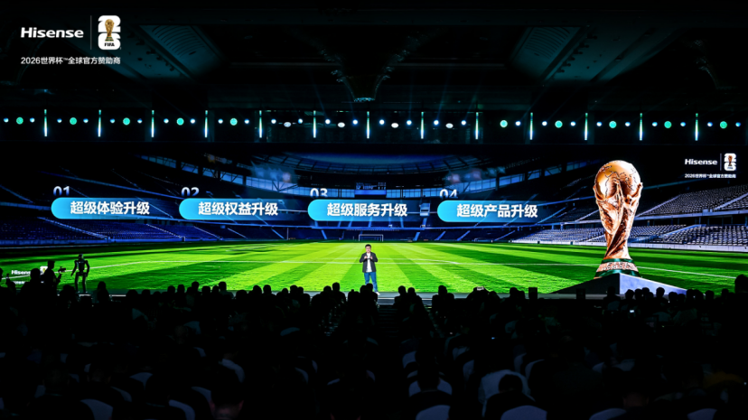
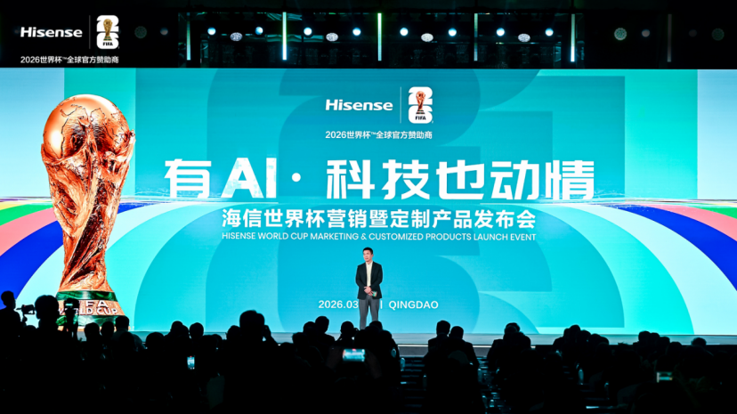

案例发生了什么



海信把一场球赛拆成赛前、赛中、赛后三个用户任务：赛前通过 AI 生成预测和背景信息，赛中提供阵容查询、球员识别与三场同看，赛后生成战术总结与复盘。官方发布页能验证功能规划，但还不能代表所有市场、机型已同步上线。
现有资料可确认，这项动作由海信发起，发生在中国企业参与；AI 电视观赛产品链，主要通过社交互动与平台内容；产品、技术或服务交付抵达受众。执行过程可以连成一条完整路径：先 UX2026 世界杯定制电视作为功能载体，将 RGB MiniLED 画质能力与 AI 观赛任务同时发布；随后三场同看解决扩军后赛程重叠问题，阵容、球员和战术问答减少用户离开屏幕查资料的频率；最后赛后复盘让功能不随终场哨立即结束，可以延长到回顾、讨论与分享；再官网负责完整说明产品与功能，官方微博则以“观赛全家桶”把功能放回家庭观赛情境。这些动作共同服务于“围绕一场比赛前中后三段设计可被使用的电视功能”，让页面能够区分参与主体、传播载体、用户接触点和品牌最终想留下的认知。
动作顺序：用 UX2026 世界杯定制电视作为功能载体，将 RGB MiniLED 画质能力与 AI 观赛任务同时发布；三场同看解决扩军后赛程重叠问题，阵容、球员和战术问答减少用户离开屏幕查资料的频率；赛后复盘让功能不随终场哨立即结束，可以延长到回顾、讨论与分享；官网负责完整说明产品与功能，官方微博则以“观赛全家桶”把功能放回家庭观赛情境。
当前资料边界：已核（海信官网与官方微博）；已归档 4 张产品功能与观赛场景原图。页面只把已经记录的参与路径和动作写成事实，未取得一手材料的执行细节、投放规模与效果不作推定。
营销启发卡
用三张卡片保留最值得记住、讨论和迁移的部分。 卡片底部按主题连接全站相关案例、经典方法与深度文章。
用 UX2026 世界杯定制电视作为功能载体
用 UX2026 世界杯定制电视作为功能载体，将 RGB MiniLED 画质能力与 AI 观赛任务同时发布；三场同看解决扩军后赛程重叠问题，阵容、球员和战术问答减少用户离开屏幕查资料的频率。
围绕一场比赛前中后三段设计可被使用的电视功能
以“AI 电视观赛产品链”为资源起点，进入电视首页、直播同屏、球员识别、复盘短片、社交分享与零售；结果优先观察功能启用、观看时长、分享、产品咨询与销售，不把曝光直接等同于销售。
家电的赛事产品化不应是功能名词堆叠
家电的赛事产品化不应是功能名词堆叠，而应覆盖一段完整的观赛任务，并用实际使用数据验证。
适用条件、风险与证据
- 先明确目标是国内动销、出海认知、渠道关系还是授权商品，而不是全部都做。
- 球星或球队的赛果只是放大器，必须准备常态内容和转化出口。
- 对授权范围、地域、肖像和商品库存建立可追溯台账。
品牌与权威来源物料
这里只展示可追溯到品牌、权利方、官方账号或明确注明原始出处的真实物料；研究图卡不计入案例图片。

官方资料、结果数据与下一步
已验证事实
- 海信 2026 年 3 月 10 日官网发布页明确写明 UX2026 搭载 AI 全景世界杯：赛前 AI 预测、赛中阵容查询与球员识别、三场同看、赛后战术总结与复盘。
- 本页 4 张图均取自海信官网发布或海信官方微博；不再使用行业转述图卡代替功能证据。
可追溯的结果
- 官方资料验证了功能与发布场景，但尚未披露支持机型覆盖量、赛期使用人数、三场同看开启率或复盘分享量。
原始来源
来源链接优先指向品牌、权利方或持权媒体官方页面；品牌自述数据按原始定义记录，不视作独立审计结果。